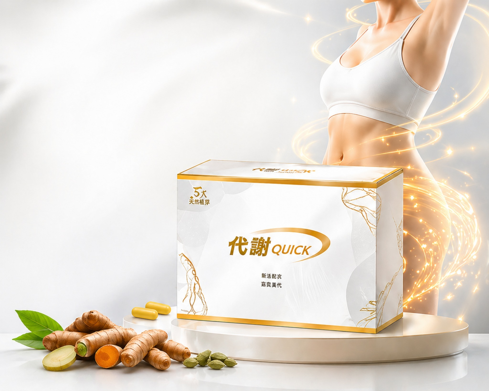

薑黃是什麼？為什麼適合日常補給？
薑黃（Turmeric）原產於印度，是薑科植物，根莖中含有豐富的薑黃素（Curcumin）。薑黃在印度傳統醫學阿育吠陀（Ayurveda）中已有超過 4,000 年的使用歷史，被認為是日常保健的重要草本之一。現代研究指出，薑黃素具有良好的抗氧化特性，因此在日常植物來源營養補給領域廣受關注。

你是不是也有這些日常困擾？不需要極端節食，也不用痛苦運動——從生活習慣與植物來源營養補給開始，逐步找回理想的健康節奏。
工作忙碌，常常只能選擇便當、麵食或外送，蔬果攝取不足，營養失衡成為日常挑戰。
三餐時間不固定，有時早餐不吃、有時深夜夜宵，影響新陳代謝與日常節奏。
下午嘴饞、聚餐點心、手搖飲成癮，常常在不知不覺中攝取過多糖分與空熱量。
晚睡、久坐、高壓力，生活節奏被打亂，連帶影響飲食習慣與身體狀態。
薑黃・小茴香・肉桂・人參・三七，植物來源日常補給
富含薑黃素（Curcumin）的印度傳統草本，是近年全球最受關注的植物來源成分之一。多項研究指出薑黃素具有良好抗氧化特性，適合作為日常植萃補給的核心素材。
地中海與中東料理常見的芳香草本，富含植物性活性成分。溫和的草本風味使其成為日常飲食管理的理想搭配，在歐洲草本補給品中已有長久使用歷史。
亞熱帶常見香料，香氣溫潤、風味獨特。肉桂中含有多種天然植化素，廣泛應用於日常植萃補給產品中，是全球最受歡迎的功能性草本之一。
東亞地區傳統滋補草本，被使用超過千年歷史。人參富含人參皂苷（Ginsenosides），是日常活力補給的經典選擇，特別適合忙碌的上班族與需要長期精力管理的族群。
又稱田七，是中國雲南、廣西地區的傳統草本植物，與人參同屬五加科。三七含有豐富的人參皂苷與三七皂苷，在植物來源營養補給領域日益受到重視。

了解五大植物來源成分的特色與日常補給價值
薑黃（Turmeric）原產於印度，是薑科植物，根莖中含有豐富的薑黃素（Curcumin）。薑黃在印度傳統醫學阿育吠陀（Ayurveda）中已有超過 4,000 年的使用歷史，被認為是日常保健的重要草本之一。現代研究指出，薑黃素具有良好的抗氧化特性，因此在日常植物來源營養補給領域廣受關注。
現代人工作忙碌，三餐經常依賴外食，容易導致蔬果攝取不足、營養不均衡。透過植物來源的營養補給品，可以在不大幅改變飲食習慣的前提下，補充日常飲食中可能缺乏的植物性成分。關鍵在於「持續性」——選擇方便食用、適合長期使用的產品，搭配均衡飲食與規律作息，才能讓日常營養管理真正見效。
面對市面上琳瑯滿目的保健產品，建議從五個面向評估：①成分透明度——是否清楚標示所有植物來源成分？②產地與製造——是否為台灣製造或有國際認證？③配方科學性——成分之間是否有協同搭配？④食用便利性——是否能融入日常作息？⑤品牌信賴度——是否有檢驗把關與售後服務？代謝Quick 在這五個面向都經過嚴格把關，是外食族日常營養補給的安心選擇。
日常營養補給、飲食管理、生活習慣與安心補給一次到位

五大植物成分協同作用，幫助維持日常良好生活節奏與身體狀態。

從日常補給做起，搭配規律三餐，逐步建立更健康的飲食習慣。

一次補充薑黃、小茴香、肉桂、人參、三七五大植物來源營養。

搭配飲食管理與規律作息，幫助打造更自信的日常狀態。

每日一次、簡單方便，幫助你維持規律的日常節奏與補給習慣。

植物來源配方，台灣製造品質把關，為日常體質保養提供安心選擇。
以個人日常體驗呈現，實際感受因人而異
簡單好執行，讓生活慢慢回到理想節奏
建議依產品標示食用，搭配足量飲水。
搭配均衡飲食與規律作息，讓日常管理更完整。
搭配睡眠、活動與飲水，建立生活節奏。
嚴格把關，日常補給更安心
依實際檢驗資料揭露
品質安心可靠
重視生產品質管理
日常補給好選擇
原價 $1,980
🔥 今日下單現省 $700
我要預約優惠 ▶$1,280 / 盒
適合第一次體驗
平均 $960 / 盒
現省 $1,280，等於多拿一盒
數量有限，售完為止｜下單後1-2天出貨
填寫後導向LINE，可直接接客服或自動成交流程
建議依產品包裝標示食用，並搭配足量飲水。
建議搭配均衡飲食與規律作息，日常管理會更完整。
每個人體質、飲食與作息不同，實際感受因人而異。
以五大植物來源成分為主：薑黃、小茴香、肉桂、人參及三七。每種成分皆為常見植物來源素材，適合日常補給使用。
主要適合外食族、上班族、久坐族，以及日常飲食不規律、想建立健康管理習慣的一般成年人。建議每日搭配均衡飲食用量食用。
代謝Quick 採用五大植物來源成分配方，不含人工添加物，主打日常營養補給與飲食管理輔助，適合長期作為生活習慣的一部分。
本產品為一般食品。若您正在服用藥物或有特殊健康狀況，建議先諮詢醫師或營養師的專業意見後再食用。
依個人食用頻率與建議用量而定。請參考產品包裝上的標示說明，搭配日常飲食規律食用效果更佳。
下單後 1-2 個工作天出貨，宅配到府。如遇例假日或物流尖峰時段，到貨時間可能略有延長。
產品為一般食品，開封後因衛生考量無法退換。如收到商品有瑕疵，請於到貨 7 日內聯繫客服處理。